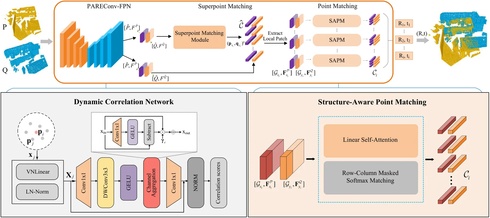
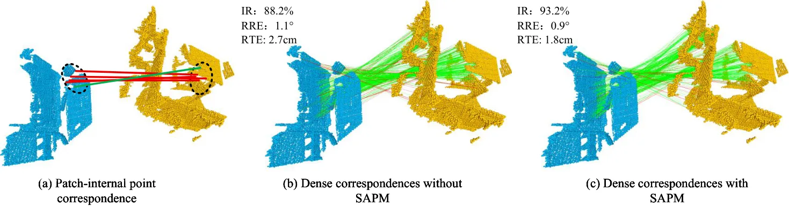
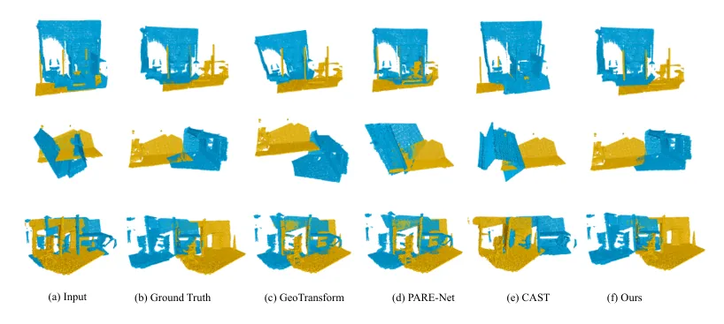
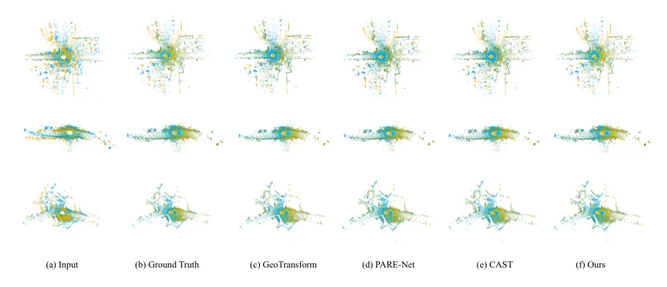

Dynamic correlation network and structure-aware matching for robust point cloud registration

Relative rotations between point clouds pose significant challenges for reliable correspondence estimation. This work proposes a rotation-robust registration framework that integrates a Dynamic Correlation Network (DCN) with Structure-Aware Point Matching (SAPM), using rotation-equivariant features, adaptive feature correlation, and bidirectional correspondence consistency to stabilize matching under unseen orientations.
This work appears in Computers & Graphics, 104672.
Algorithm principle
This paper targets rotation-robust point cloud registration. A major weakness of many learned registration methods is that rotation augmentation cannot densely cover the continuous SO(3) space, so feature correlations become unstable when test-time rotations differ from training-time rotations.
The proposed framework combines a Dynamic Correlation Network (DCN) with Structure-Aware Point Matching (SAPM). DCN starts from rotation-equivariant features and dynamically assembles local feature correlations with adaptive channel and spatial weighting, then reasons in a rotation-invariant feature space. SAPM refines patch-level and point-level correspondences with contextual interactions and bidirectional consistency, so the final matching stage is less dependent on brittle single-point similarities or RANSAC-style cleanup.
Visual evidence

Overall DC-SAM architecture. Rotation-equivariant feature extraction is followed by dynamic correlation modeling and structure-aware correspondence refinement.

Point-level correspondences after structure-aware matching. The module uses neighborhood context and bidirectional consistency to suppress unstable matches.

Indoor registration examples on 3DMatch/3DLoMatch-style scenes, where rotation variation and partial overlap make correspondence selection difficult.

Outdoor KITTI registration examples showing that the same matching strategy transfers from indoor RGB-D scans to LiDAR-scale scenes.
Results and impact
Experiments on indoor benchmarks (3DMatch and 3DLoMatch) and outdoor KITTI data show stronger accuracy and robustness under varying rotations than recent registration baselines. The main practical contribution is not only higher registration quality, but a registration pipeline that remains stable when the relative orientation is outside the narrow distribution seen during training.